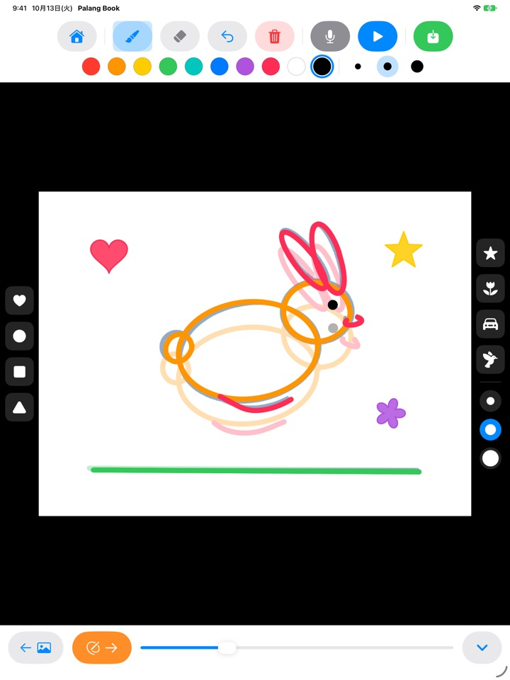
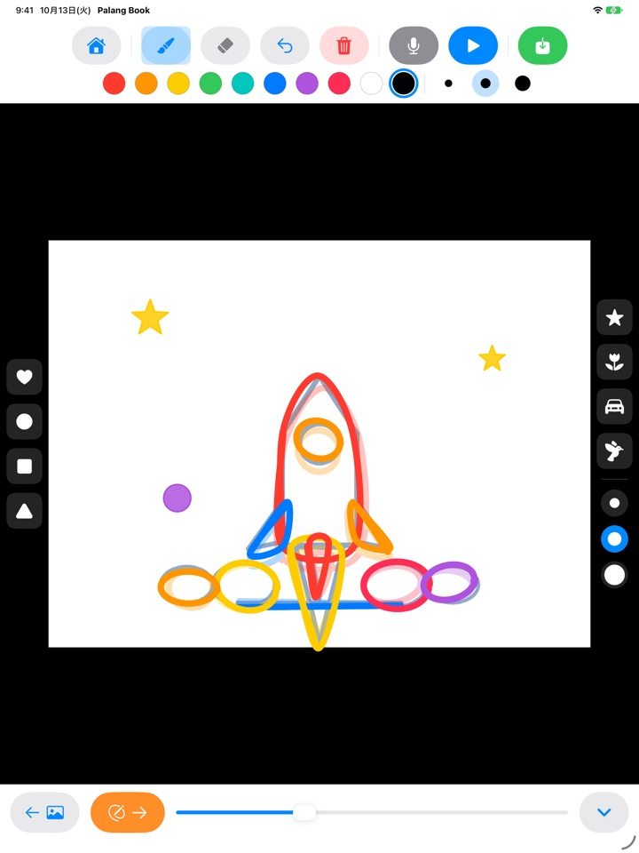
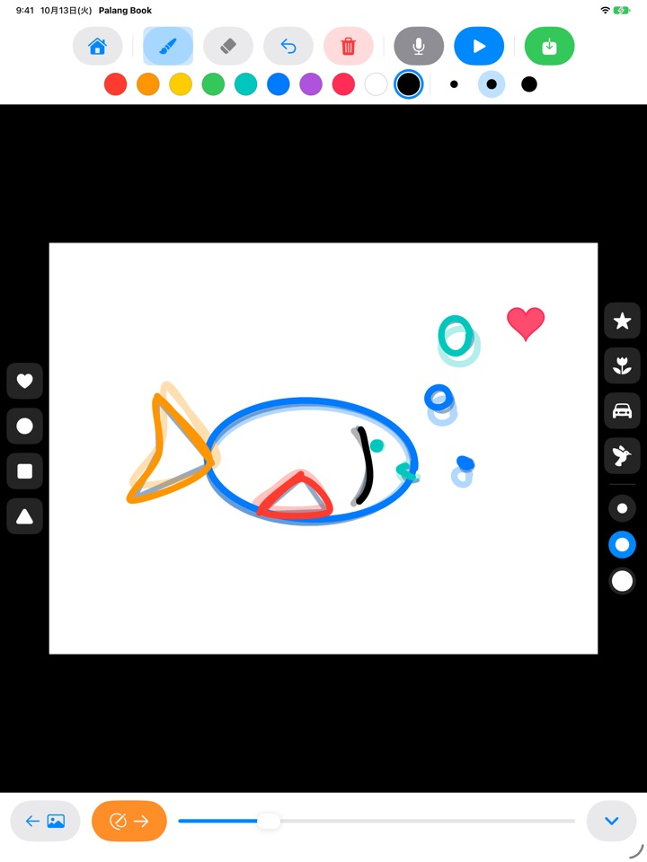
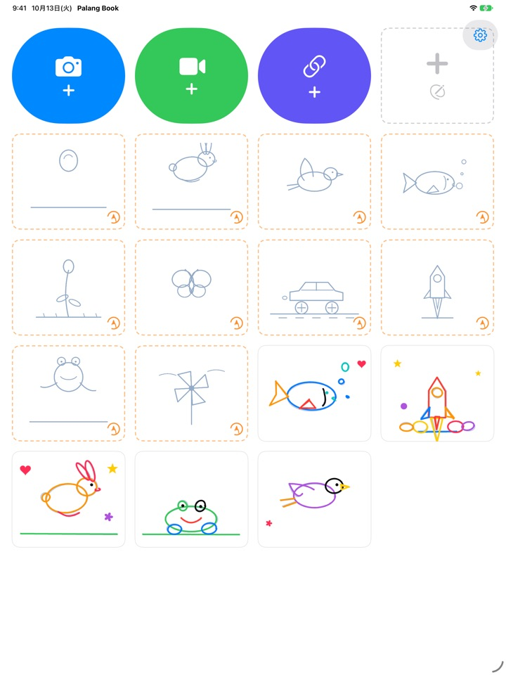

なぞった絵が
パラパラ動く
うすい下絵を1枚ずつなぞって再生ボタンを押すと、下絵は消えて、子どもが描いた線だけが動き出します。ボタンはすべて絵なので、まだ字が読めなくてもひとりで遊べます。
iPad 専用です。なぞり描き3セットは無料です。

1枚ずつ描いてみよう
1枚描いたら、オレンジの矢印で次のページへ。前のページがうっすら透けて見えます。2〜3枚描いたら、青い再生ボタンを押してみてください。
せっかく描いた絵、1枚で終わらせるのはもったいなくないですか？
アニメーションは、少しずつ違う絵を何枚も描かなければならないので、子どもひとりではどこから描けばいいのか迷ってしまいます。Palang Book は動きの入ったうすい下絵を用意しているので、子どもは線をなぞるだけ。再生を押した瞬間、自分の絵が動くのを目にします。
なぞるだけでアニメーション
はずむボール、ぴょんと跳ねるウサギ、空を飛ぶ鳥、泳ぐ魚、咲いていく花、ちょうちょ、走る車、飛び立つロケット、カエル、かざぐるま。各セットに約20枚の下絵が入っています。
前のページの絵がうっすら透けて見えるので続きを描きやすく、再生すると下絵は消えて子どもの絵だけが動きます。

スタンプをポン、色は10色
ハート、まる、しかく、さんかく、星、花、車、鳥のスタンプをポンと押して飾れます。スタンプの大きさと筆の太さは3種類ずつ、色は10色です。
消しゴムと取り消しがあるので、まちがえてもすぐに描き直せます。指でも Apple Pencil でも描けます。

自分の動画の上にも、白い紙にも
撮影した動画や写真アプリの動画を読み込んで、その上からなぞれます。背景を隠すと、絵を描いた場面だけが白い紙の上で続けて再生されます。下絵なしで白い紙に自由に描くパラパラ漫画もあります。
マイクを押せば子どもの声も録音していっしょに残せて、完成した作品は動画として写真アプリに保存し、家族と共有できます。

はじめかたは3ステップ
- 1
下絵カードをタップ
ホーム画面のオレンジの点線カードがなぞり描きです。
- 2
1枚描いてめくる
オレンジの矢印を押すと次のページへ進みます。
- 3
再生を押す
青い再生ボタンを押すと、自分の絵が動きます。
ボタンの案内
- オレンジの点線カード
- なぞり描きを始める
- グレーの点線カード
- 白紙のパラパラ漫画
- 青いカメラ
- 撮影した動画に描く
- 緑のビデオ
- 写真アプリの動画を読み込む
- 藍色のリンク
- 動画ファイルのリンクを貼り付けて開く
- オレンジの矢印
- 次のページへ
- 青い再生
- アニメを再生、もう一度押すと停止
- 曲がった矢印
- 最後の線を取り消す
- 赤いゴミ箱
- このページをまるごと消す（取り消しで元に戻せます）
- マイク
- くり返し再生の間に声を録音
- ビデオのアイコン
- 動画の背景を隠す（ピンクの斜線になると絵だけを再生）
- 緑の保存
- 写真アプリに動画として保存
作品を削除するときは、ホーム画面で作品のカードを長押ししてください。絵、録音、読み込んだ動画もいっしょに削除されます。
まずは無料でたっぷり。気に入ったら買い切りプランを
無料
- なぞり描き3セット（ボール、ウサギ、花）
- 作品の保存3つまで
- 動画の読み込み1回
- 白紙のパラパラ漫画10枚まで
- 声の録音15秒まで
- スタンプ、色、筆、写真アプリへの保存
買い切りプラン
- なぞり描きの全セット、これから出るセットも
- 作品数、ページ数、動画、録音時間の制限なし
- 保存した動画の最後の Palang Book カードなし
サブスクリプションではない、一度きりの購入です。ファミリー共有で、家族の iPad でもいっしょに使えます。
無料で保存した動画の最後には、短い Palang Book のカードが入ります。買い切りプランが登場する前から Palang Book をお使いの方は、すべての機能がそのまま使えます。
よくある質問
下絵はどう使うのですか？
うすい水色の線が下絵です。お子さまはその上をなぞって描くだけ。再生を押すと下絵は消えて、お子さまが描いた線だけが動きます。約20枚を描き終えたら完成です。
動画なしで、絵だけを再生・保存したいです。
動画の作品で、上のツールバーにあるビデオのアイコンをタップしてピンクの斜線にすると、再生でも保存でも白い背景に絵だけが表示されます。絵を描いた場面だけをつないで再生するので、長い動画に数枚描くだけでも短いアニメーションになります。
できあがった動画はどこに保存されますか？
ツールバー右端の緑の保存ボタンを押すと、mp4 の動画が写真アプリに保存されます。初めて保存するときは、写真へのアクセスを許可してください。
声はどうやって入れるのですか？
マイクのボタンを押すと、アニメーションがくり返し再生される間に声が録音され、停止ボタンを押すと録音が終わります。録音し直すと前の録音は上書きされます。保存すると、動画に声もいっしょに入ります。
動画のリンクが開けません。
インターネットに接続されているか、貼り付けたアドレスが動画ファイルそのもののリンク（末尾が .mp4 などのアドレス）になっているかを確認してください。動画共有サイトのページのリンクは開けません。著作権に配慮して、ご自身で撮影した動画や自由に使える動画をご利用ください。
手のひらが触れて線が引かれてしまいます。
曲がった矢印で最後の線を消せます。赤いゴミ箱はページをまるごと消せて、取り消しで元に戻すこともできます。何度も起きる場合はメールでお知らせください。お手伝いします。
購入画面の前に、なぜ計算問題が出るのですか？
お子さまがひとりで購入画面に進まないようにするためです。お子さまが鍵のかかったものを押すと、大きな鍵と「おとなの人に見せてね」が表示され、大人がかけ算の答えを入力すると購入画面が開きます。
購入を復元するには？
ホーム画面右上の歯車をタップし、買い切りプランを選んで大人向けの問題に答えたあと、購入を復元をタップしてください。購入したときと同じ Apple アカウントでサインインしている必要があります。
アプリからフィードバックを送るには？
ホーム画面の歯車をタップし、フィードバックを送るを選んでください。スクリーンショットを添付でき、返信をご希望の場合はお名前とメールアドレスを入力してください。フィードバックは保護者の方が送ってください。
子どもの情報を集めていますか？
いいえ。Palang Book は個人情報を一切集めません。絵と録音はこの iPad の中だけに保存されます。くわしくはプライバシーポリシーをご覧ください。
ご質問や不具合は mizzking75@gmail.com までメールでご連絡ください。通常2〜3日以内にお返事します。